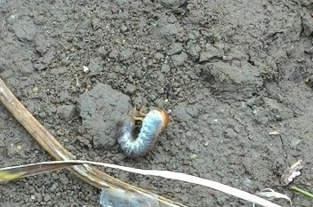
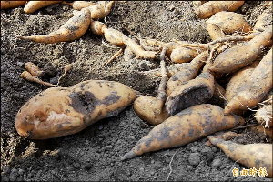
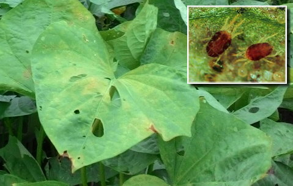
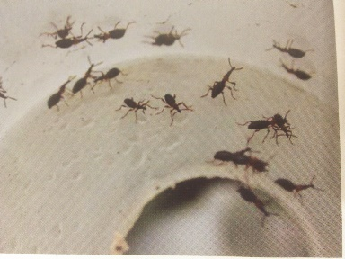

|
地瓜的病蟲害，相較於其他種類的糧食作物來的少，可也會對地瓜造成嚴重的傷害及衝擊，使種植地瓜的農民血本無歸。為了讓能夠深入了解有關地瓜的病蟲害，我們將訪問、收集到的資料，整理如下： |
||
|
一、雞母蟲，牠會啃咬地瓜，使地瓜表面都會坑坑巴巴的，賣相不好，成為次級品。 |
二、地瓜白娟病，因為氣候的因素，使得土壤中的白娟病菌滋生，讓地瓜出現局部腐爛的情況。 |
|
|
 雞母蟲 （圖片來源：自行拍攝） |
 得到白娟病的地瓜 | |
|
三、葉螨，又稱紅蜘蛛，會吸食地瓜的葉子，會讓葉子呈現紅褐色，沒有地瓜葉，地瓜便不能行光合作用，無法儲存養分，導致地瓜發育不良，地瓜的產量就會減少。 |
四、甘薯蟻象，會造成俗稱的「臭香」，如果不小心煮到參雜有「臭香」的地瓜，會使那一道料理無法食用。臭香的地瓜，表面會有小黑洞，也會有一股味道，剖開來後會有蟻象的幼蟲在裡面啃食。 |
|
|
 葉螨 （圖片來源：葉蟎之生物防治概況） 被吸食的地瓜葉 （圖片來源 ：自行拍攝） |
 甘薯蟻象 （圖片來源：桃園區農業專訊<<甘藷專輯>> 第60期民國96年6月發行-P25、P26） |
|
|
資料來源：旺旺地瓜園園主賴先生專訪 | ||